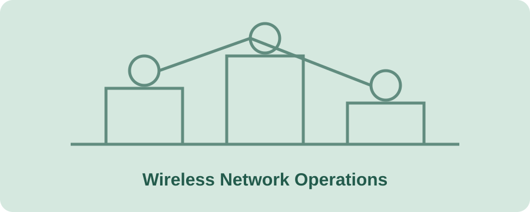

Wireless Manager
Fushanj Telecom Company
- Coordinate wireless network operations and support service availability across a multi-site environment.
- Oversee wireless access points and connected infrastructure supporting 500+ devices.
- Use monitoring and troubleshooting tools to investigate incidents and maintain network performance.
- Completed a network automation project covering 8 sites and 94 access points.